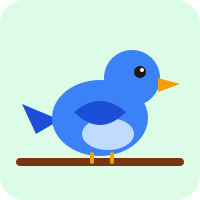
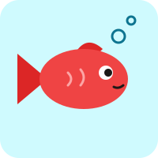
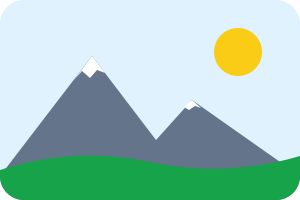

Imatges
En acabar aquest capítol sabràs posar imatges a les teves pàgines, triar-ne la mida i, sobretot, descriure-les perquè tothom sàpiga què hi ha.
La teva primera imatge
Una imatge s'escriu així:
<img>(de l'anglès image) és un element buit, com<br>: no té contingut ni etiqueta de tancament. Tot el que cal saber de la imatge va als atributs.src(de source, «origen») diu quin és el fitxer de la imatge.alt(d'alternative) és el text alternatiu: explica amb paraules què es veu a la imatge.
A HTMLCat, les imatges són d'un paquet d'imatges del curs (més avall les veuràs totes). El resultat no carrega res d'Internet: així ningú no pot saber què fas mentre aprens.
El text alternatiu
Hi ha persones que no poden veure les imatges: les persones cegues fan servir un lector de pantalla, un programa
que llegeix la pàgina en veu alta, i quan troba una imatge en llegeix l'alt. I, a vegades, la imatge
no es carrega (una connexió lenta, un nom mal escrit): llavors el navegador mostra l'alt en el seu lloc.
Prova-ho: esborra una lletra d'ocell.svg. La imatge ja no es troba i el navegador mostra el text
alternatiu (el panell ⚠ Problemes també t'avisa que no troba la imatge).
Un bon alt:
- Diu què es veu, en una frase curta, com si ho expliquessis per telèfon: «Un ocell blau sobre una branca».
- No diu «imatge» ni «foto», ni és el nom del fitxer: el lector de pantalla ja avisa que és una imatge, i «ocell.svg» no explica res.
Si una imatge només decora i no aporta res (com un dibuix al costat d'un títol que ja diu el mateix), posa-hi
alt="": buit, però escrit. Així el lector de pantalla se la salta.
<h2><img src="animals/peix.svg" alt="" width="40" height="40"> Els peixos</h2>
Imatges dins de carpetes
Les imatges del curs són en aquestes carpetes:
recursos/
├── gat.svg
├── animals/
│ ├── gos.svg
│ ├── ocell.svg
│ └── peix.svg
└── paisatges/
└── muntanya.svg
Als simuladors, la teva pàgina és com si fos a la carpeta recursos, al costat de les imatges. El
src és un camí relatiu, com els enllaços del capítol 4: gat.svg és a la mateixa carpeta, i
animals/gos.svg és el fitxer gos.svg de dins de la carpeta animals.
Aquestes són totes, amb el seu src i la seva mida en píxels (amplada × alçada):
gat.svg 200 × 200animals/gos.svg 200 × 200
animals/ocell.svg 200 × 200
animals/peix.svg 200 × 200
paisatges/muntanya.svg 300 × 200El nom ha de ser exactament el del fitxer, lletra per lletra:
- Les majúscules compten:
Gos.svgigos.svgsón dos fitxers diferents. - L'extensió, el final del nom, també hi va:
.svg,.png,.jpg… - Per això, quan posis nom als teus fitxers, fes-ho en minúscules, sense espais ni accents, i amb guions:
gos-petit.png.
Les fotos solen ser .jpg o .webp; els dibuixos, .png o .svg. Un
.svg es pot fer tan gran com vulguis sense que es vegin els píxels.
La mida: width i height
Cada imatge té la seva mida, però la pots canviar amb width (amplada) i height (alçada),
en píxels:
- Només el número, sense unitat:
width="80", nowidth="80px". - Posa-hi les dues mides: així el navegador sap quant d'espai ocuparà la imatge abans de carregar-la, i la pàgina no fa salts mentre es carrega.
- Mantén la proporció de la imatge: la muntanya fa 300 × 200, i 180 × 120 és el mateix rectangle més petit. Si no, una foto es deforma (aquests dibuixos no, però queden encongits al mig d'un espai buit).
Fixa't que les dues imatges queden una al costat de l'altra: una imatge va dins de la línia, com una paraula molt grossa.
Una imatge amb peu: figure i figcaption
Com als llibres, una imatge pot tenir un peu que l'expliqui:
<figure>agrupa la imatge i el seu peu: és un bloc que s'entén tot sol.<figcaption>és el peu, i va just després de la imatge (o just abans, si el vols a dalt).- L'
alti el peu no diuen el mateix: l'altdescriu el que es veu, per a qui no ho pot veure; el peu és per a tothom i hi afegeix el que la imatge no diu (qui és, on és, quan…).
El navegador deixa un marge a l'esquerra i a la dreta de la figura; amb CSS (a la part B del curs) el podràs canviar.
Errors típics
Aquests exemples tenen errors. Mira el resultat i després llegeix el panell ⚠ Problemes.
Una imatge que no es troba
No es veu cap de les dues imatges, només el seu alt. A la primera li falta la carpeta
(animals/ocell.svg) i a la segona li sobra una majúscula (animals/gos.svg).
Una imatge sense alt
Es veu bé, però qui no la pot veure no sabrà què hi ha, i si no es carregués només en quedaria la icona d'una imatge trencada. Cada imatge necessita el seu alt.
Un atribut mal escrit
scr en lloc de src: el navegador no coneix l'atribut scr, no en fa cas i no
sap quina imatge ha de mostrar. Per sort, l'alt hi és.
Una imatge d'Internet
A HTMLCat no es veu: el resultat no carrega res d'Internet. En un web de debò sí que es veuria, però compte: les imatges d'altres webs tenen autor i no sempre es poden fer servir, i si l'altra web la canvia o l'esborra, la teva pàgina es queda sense. El millor és posar les imatges al teu web, al costat de les pàgines.
Una mida amb px
Es veu bé, perquè el navegador llegeix el 100 i no fa cas del px. Però no és HTML correcte: escriu només el número, width="100".
Exercici: l'àlbum d'animals
Completa l'àlbum. Ha de tenir:
- almenys dues figures
<figure>, cadascuna amb una imatge de la carpetaanimalsi amb el seu peu<figcaption>; - almenys un animal que no sigui el gos;
- a cada imatge, un
altque digui què es veu, iwidthiheight; - cap error ni cap avís al panell ⚠ Problemes.
Quan acabis, prem ✓ Comprova.
Troba l'error
La pàgina dels animals de l'escola té cinc problemes: dues imatges que no es troben, un atribut mal escrit, una
imatge sense alt i una mida amb unitat. El panell ⚠ Problemes t'ajudarà a trobar-los. L'alt
que falta l'has d'escriure tu: mira què es veu a la imatge. Quan acabis, prem ✓ Comprova.
Resum
- Una imatge és
<img src="fitxer" alt="què es veu" width="…" height="…">, un element buit. - L'
altdescriu la imatge per a qui no la pot veure i es mostra si no es carrega; si la imatge només decora,alt="". - El
srcés un camí relatiu, amb les carpetes (animals/gos.svg) i el nom exacte: majúscules i extensió incloses. widthiheightsón en píxels, sense unitat, i mantenen la proporció de la imatge.<figure>agrupa una imatge amb el seu peu,<figcaption>.